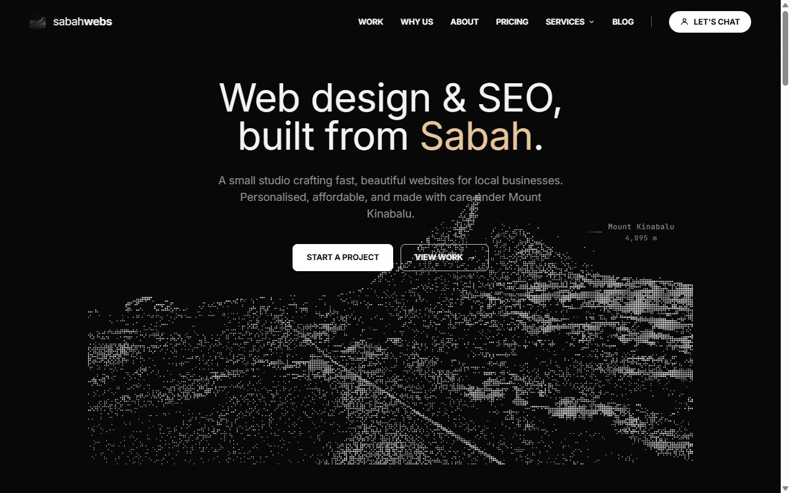

Fried noodles with egg, char siew and egg rolls. Better than the original in Tamparuli, no drive needed.

Fried noodles in silky egg gravy with fatty char siew. Hidden from tourists, packed with locals. Cheap and big portions.

Crispy wrapper, juicy pork, fried to order. A locals-only stall inside Kai Shun. RM12 for ten.

DESAMOO soft serve at DESA Fresh Mart, Damai Plaza Luyang. Highland dairy ice cream, now 5 minutes from town.

Free entry, 40 minutes to the top, real forest the whole way. And that view of KK city when you get there.

Hidden in Damai Plaza. Massive portions, juicy chicken, and a ginger sauce worth the drive.

Clean, well managed, great brands and solid food. The only mall answer you need in KK.

Decades in the game. Cheapest prices. Best stringing in KK. Right next to the Foochow courts.

Booking, training, Kampung Adidas, and what it actually feels like standing at 4,095m.

Deep herbal broth, fall-off-the-bone pork, free soup refills. Yu Kee on Jalan Gaya is the answer.

Fresh from the tank, cooked fast, priced right. Around RM40 per head for a full spread.

RM14 for a huge bowl of clear beef soup. Proper toppings. Yii Siang has been doing this right for years.

A 24-hour clinic, a scaffolding supplier, an eco-tour crew, and a KK web design studio. Locals doing real work.